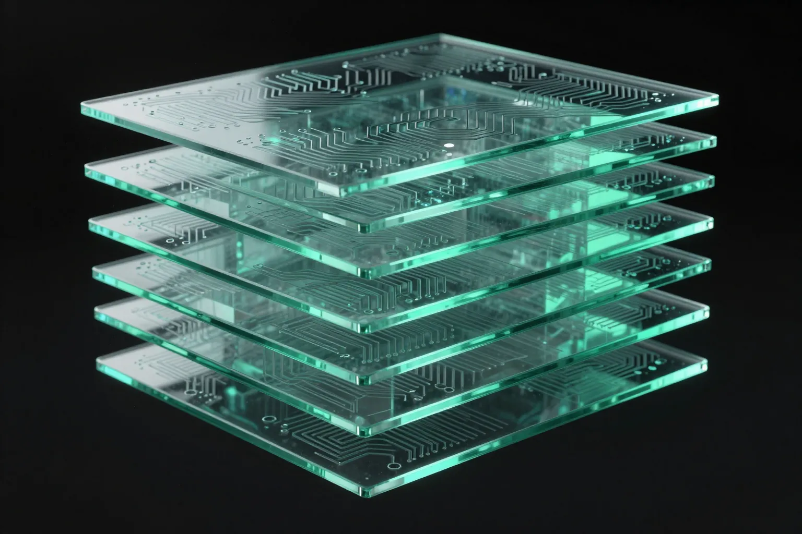

Agentic Systems
Planning, tool use, orchestration, bounded replanning and workflow execution — agents with explicit state and boundaries.
AI engineer with 8+ years across real-world software applications, data-driven and statistical systems, blockchain and financial infrastructure — now building reliable, executable AI systems: agents that plan, execute, evaluate, verify and recover.
My engineering path started with software systems and real-world applications — reservation-style systems where transactional workflows, integrations and business logic had to actually work. It moved through data-driven and statistical systems, where I built Python trading systems that turned quantitative rules into executable strategies with backtesting and automated execution, and into blockchain and financial infrastructure, where state, transactions and numerical correctness carry real consequences.
That progression shaped how I approach AI today: not as a prompt layer around a model, but as an engineering system that needs execution, state, evaluation, observability, verification and recovery. Machine learning, deep learning, NLP, RAG and generative AI added the model layer; the systems background underneath it is what makes the difference.
My current focus is agentic systems and AI infrastructure — models as components inside larger, testable workflows that can plan, use tools, evaluate their own results, and recover when execution goes wrong.
Systems that reason, plan, execute, evaluate and recover — with correctness, observability and provenance treated as engineering requirements.
Planning, tool use, orchestration, bounded replanning and workflow execution — agents with explicit state and boundaries.
Evaluation, benchmarking, verification, grounding and regression detection — correctness as an engineered property.
RAG, OCR, NLP and generative AI built around grounding, citations and knowing when the system does not know.
Workflow runtimes, execution state, event tracing, provenance and reproducible artifacts.
Backend and distributed systems, APIs, state management, messaging and recovery — the layer AI stands on.
Containers, CI/CD, Linux and Windows engineering, and the observability that keeps systems trustworthy.
A progression from software systems and quantitative computing to reliable AI infrastructure.
Real-world applications and backend systems — including hotel and flight reservation-style work with transactional workflows, integrations and business logic that had to hold up in production.
Python for numerical data, visualization and statistical logic — building trading systems where quantitative rules became executable strategies with backtesting, automated position execution and analysis of system behavior.
Blockchain engineering connected to cryptocurrency exchange infrastructure — systems where transactions, state and numerical correctness matter, and reliability is not optional.
Data science, deep learning, NLP, RAG and OCR — the model layer, built on the same foundation of correctness and evaluation.
Planning, tool use, orchestration and workflow execution — models moved from answers into executable systems.
Evaluation, benchmarking, verification, observability and provenance — the current direction, expressed in LOTA.design.
Everything ships to GitHub first — repositories, commits and work in progress live on the profile.
AI can generate an artifact. LOTA explores how to trust it.
An AI production and workflow-infrastructure concept focused on making generated artifacts traceable, identifiable, and verifiable — where a produced output carries its origin: the workflow, execution, inputs, models and version behind it, connected to evaluation and verification.
Each layer is an addressable record — identity and provenance bind an artifact to the workflow, execution, inputs and model version that produced it.
An execution runtime for agents that turns plans into observable, recoverable workflows. A Planner Agent and AgentLoop drive plan → execute → evaluate with bounded replanning, while workflow state, execution events and recovery stay explicit: Task Execution Service, Tool Registry, provider-agnostic LLM boundary, PostgreSQL persistence, a workflow state machine, crash-recovery primitives and EventStore tracing.
A document QA system designed to know when it does not know. PDFs move through extraction, OCR fallback, cleaning, chunking, retrieval and grounding before an answer is presented — every answer cited to source documents, and validated by an automated golden evaluation dataset (direct, borderline, irrelevant and multi-document cases) scored for correctness, faithfulness and contextual relevancy. The point is not generating an answer; it is knowing whether the answer is right.
Built and evaluated a text-to-image generation system for generative graphics — not just producing images, but measuring them: systematic benchmarking of generated output quality, with iterative improvement of the generation workflow driven by benchmark results. Generation → benchmark → evaluate → improve.
An engineering contract for AI-assisted software development. Instead of trusting generated code, the workflow forces every AI-assisted change through explicit contracts — AGENTS.md as the engineering source of truth — then a verification loop of formatting, linting, type checking, tests, build verification and minimal smoke proofs, with CI keeping the loop reproducible.
A property discovery engine that matches human intent against noisy real-world listings: user-described apartment requirements are matched against Persian listings, with normalization, duplicate detection for the same physical property, change tracking and alerts — running on data pipelines and a worker architecture with structured verification gates and careful handling of untrusted listing text.
Security engineering for LLM-powered workflows and agentic systems, focused on threat modeling, trust boundaries, prompt injection, tool abuse, and security evaluation.
A future computer vision and multimodal AI track exploring image understanding, visual reasoning, vision-language workflows, and multimodal evaluation.
Repositories, commits and work in progress live on the profile — including devtycoon, a technical startup simulator game built with React.
github.com/siavash-debugLOTA.design is an architecture direction, not yet a shipped platform. The full case study on artifact identity and provenance is in progress.
Generation is the start of the pipeline, not the end. Every output is something to execute, observe and judge — never something to ship on faith.
Explicit state, bounded replanning and recovery paths. Autonomy without boundaries is a liability; boundaries are what make autonomy useful.
Benchmarks, deterministic tests and regression detection are not an afterthought — they are how AI systems earn the right to run.
Provenance, event tracing and reproducible artifacts — so failures can be traced, explained and corrected instead of rediscovered.
Six disciplines, treated as one system — from the model layer down to the runtime it executes on.
Evidence of the data, ML and systems foundation behind the AI work — from data science and deep learning to blockchain, security and cloud. Filter by track or search below.

Open to AI engineering, agentic systems and platform roles — or just a good conversation about agents in production.